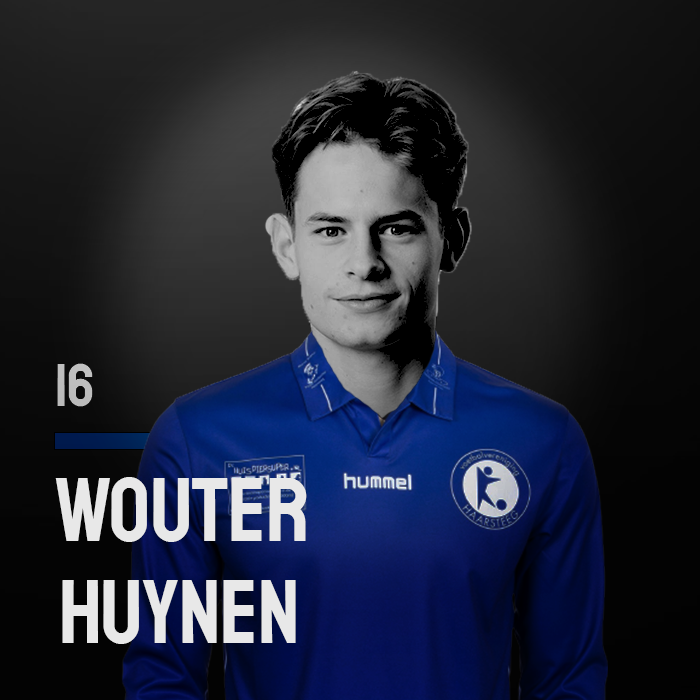
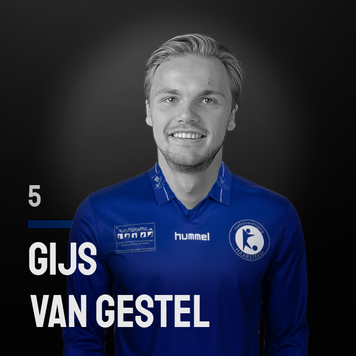
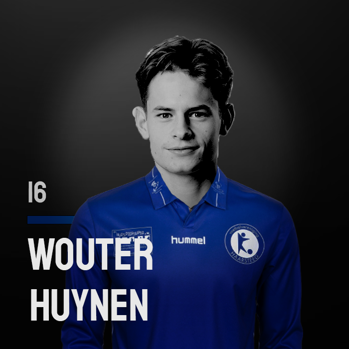
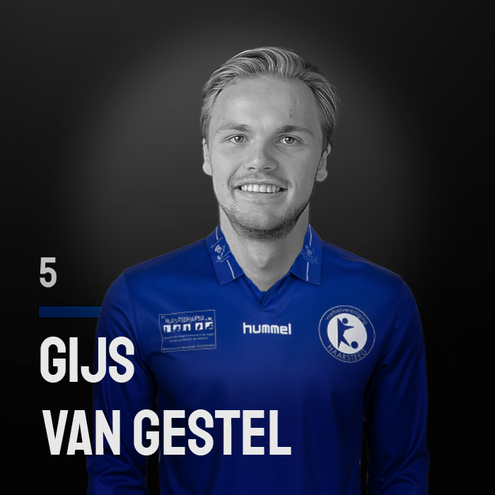

Project X Sprint 1
In mijn persoonlijke project heb ik voor het onderwerp mijn eigen voetbalteam gekozen. Ik ben namelijk leider/trainer maar ook speler van een amateurseniorenteam. Voetbal is samen met ict mijn passie daarom vind ik het leuk om dit te combineren. Daarbij houd ik een hoop gegevens bij en mij lijkt het leuk om een plek te maken waar iedereen dit kan zien. Daarnaast vind ik het superleuk om een vette website te maken van het team.
Ik ben bezig geweest met het verzamelen van iedereen zijn foto om uiteindelijk een speciale kaart te maken voor op de website. De bedoeling hiervan is dat iedereen een persoonlijk profiel heeft.
{kind=link}
 



Tijdens het bedenken van de website heb ik gebruik gemaakt van veel inspiratie van andere websites. Met de designs begon ik met een redelijk saai en ouderwetste website en ben geëindigd met een moderne mooie website. Dit allemaal door gebruik te maken van verschillende malen feedback en inspiratie van andere. Dit proces kun je vinden in het document iteraties en net zoals het document met het uiteindelijke concept.